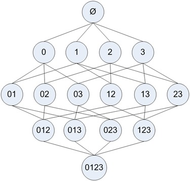
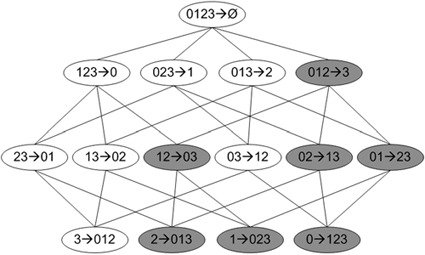

使用Apriori算法进行关联分析
在大规模数据集中寻找物品的隐含关系被称作关联分析(association analysis)或者关联规则学习(association rule learning)，例如商品的定向推荐。
关联分析
Aprior算法
优点：易编码事先
缺点：在大数据集上可能较慢
适用数据类型：数值型或标称型数据
关联分析是一种大规模数据集中寻找有趣关系的任务。这些关系可以有两种形式：频繁项集或者关联规则。频繁项集（frequent item sets）是经常出现在一块的物品的集合，关联规则（association rules）暗示两种物品之间可能存在很强的关系。
频繁项集是指那些经常出现在一起的物品集合（啤酒和尿布）
一个项集的支持度（support）被定义为数据集中包含该项集的记录所占比例。支持度是针对项集来说的，因此可以定义一个最小支持度，而只保留满足最小支持度的项集。
可信度或置信度（confidence）是针对一条关联规则来定义的。
支持度和可信度是用来量化关联分析是否成功的方法。
Apriori原理
Apriori算法的一般过程
- 收集数据
- 准备数据
- 分析数据
- 训练数据：使用apriori算法来找到频繁项集
- 测试算法：不需要测试过程
- 使用算法：用来发现频繁项集以及物品之间的关联规则
Apriori原理，如果某个项集是频繁的，那么他的所有子集也是频繁的。对于下图的例子意味着，{0, 1}是频繁的，那么{0}，{1}也是频繁的，这个原理反过来看就是，如果说一个项集是频繁的，那么它的所有超集也是频繁的。

使用Apriori算法来发现频繁集
Apriori算法的两个输入参数分别是最小支持度和数据集。该算法首先会生成所有单个物品的项集列表。接着扫描交易记录来查看哪些项集满足最小支持度要求，那些不满足最小支持度的集合会被去掉。然后对剩下的集合进行组合生成包含两个元素的项集。接下重新扫描交易记录，去掉不满足最小支持度的项集。重复该过程直到所有项集都被去掉。
生成候选集
创建一个用于构建初始集合的函数，和一个通过扫描数据集以寻找交易记录子集的函数。
数据集扫描的伪代码如下：
对数据集中的每条交易记录tran
对每个候选项集can:
检查一下can是否是tran的子集:
如果是，则增加can的计数值
对每个候选集：
如果其支持度不低于最小值，则保留该项集
返回所有频繁项集列表
1 | def loadDataSet(): |
C1是大小为1的所有候选项集的集合。
L1是满足最低要求的项集构成的集合L1。
createC1()函数将构建第一个候选项集的列表C1，scanD()有三个参数，分别是数据集，候选项集列表Ck，以及感兴趣项集的最小支持度minSupport。
1 | dataSet = loadDataSet() |
[[1, 3, 4], [2, 3, 5], [1, 2, 3, 5], [2, 5]]
1 | C1 = createC1(dataSet) |
[frozenset({1}),
frozenset({2}),
frozenset({3}),
frozenset({4}),
frozenset({5})]
1 | D = list(map(set, dataSet)) |
[{1, 3, 4}, {2, 3, 5}, {1, 2, 3, 5}, {2, 5}]
1 | L1, suppData0 = scanD(D, C1, 0.5) |
({frozenset({1}): 0.5,
frozenset({3}): 0.75,
frozenset({4}): 0.25,
frozenset({2}): 0.75,
frozenset({5}): 0.75},
[frozenset({5}), frozenset({2}), frozenset({3}), frozenset({1})])
上述4个项集构成了L1列表，该列表中的每个单物品项集至少出现在50%以上的记录中。由于物品4并没有达到最小支持度，所以不在L1中。
组织完整的Apriori算法
整个Apriori算法的伪代码如下：
当集合中项的个数大于0时
构建一个k个项目组成的候选项集的列表
检查数据以确认每个项集都是频繁的
保留频繁项集并构建k+1项组成的候选项的列表
1 | def aprioriGen(Lk, k): |
1 | L, suppData = apriori(dataSet) |
[[frozenset({5}), frozenset({2}), frozenset({3}), frozenset({1})],
[frozenset({2, 3}), frozenset({3, 5}), frozenset({2, 5}), frozenset({1, 3})],
[frozenset({2, 3, 5})],
[]]
1 | L[0] |
[frozenset({5}), frozenset({2}), frozenset({3}), frozenset({1})]
1 | L[1] |
[frozenset({2, 3}), frozenset({3, 5}), frozenset({2, 5}), frozenset({1, 3})]
1 | L[2] |
[frozenset({2, 3, 5})]
1 | L[3] |
[]
每个项集都是在apriori()中调用函数aprioriGen()来生成的。
1 | aprioriGen(L[0], 2) |
[frozenset({2, 5}),
frozenset({3, 5}),
frozenset({1, 5}),
frozenset({2, 3}),
frozenset({1, 2}),
frozenset({1, 3})]
1 | L, suppData = apriori(dataSet, minSupport=0.7) |
[[frozenset({5}), frozenset({2}), frozenset({3})], [frozenset({2, 5})], []]
变量suppData是一个字典，它包含我们项集的支持度值。
从频繁项集中挖掘关联规则
要找到关联规则，我们首先从一个频繁项集开始。我们知道集合中的元素是不重复的，但我们想知道基于这些元素能否获得其他内容。某个元素或者某个元素集合可能会推导出另一个元素。
关联规则的量化指标是，可信度。一条规则P->H的可信度定义为support(P|H)/support(P)。

对于频繁项集{0，1，2，3}的关联规则网络示意图。阴影区域给出的是低可信度的规则。如果发现0，1，2—>3是一条低可信度规则，那么所有其以3作为后件的规则可信度也会较低。
1 | def generateRules(L, supportData, minConf=0.7): |
1 | L, suppData=apriori(dataSet, minSupport=0.5) |
frozenset({5}) --> frozenset({2}) conf: 1.0
frozenset({2}) --> frozenset({5}) conf: 1.0
frozenset({1}) --> frozenset({3}) conf: 1.0
frozenset({5}) --> frozenset({2, 3}) conf: 2.0
frozenset({3}) --> frozenset({2, 5}) conf: 2.0
frozenset({2}) --> frozenset({3, 5}) conf: 2.0
1 | rules = generateRules(L, suppData, minConf=0.5) |
frozenset({3}) --> frozenset({2}) conf: 0.6666666666666666
frozenset({2}) --> frozenset({3}) conf: 0.6666666666666666
frozenset({5}) --> frozenset({3}) conf: 0.6666666666666666
frozenset({3}) --> frozenset({5}) conf: 0.6666666666666666
frozenset({5}) --> frozenset({2}) conf: 1.0
frozenset({2}) --> frozenset({5}) conf: 1.0
frozenset({3}) --> frozenset({1}) conf: 0.6666666666666666
frozenset({1}) --> frozenset({3}) conf: 1.0
frozenset({5}) --> frozenset({2, 3}) conf: 2.0
frozenset({3}) --> frozenset({2, 5}) conf: 2.0
frozenset({2}) --> frozenset({3, 5}) conf: 2.0
一旦降低可信度阈值，就可以获得更多的规则。
实例：发现国会投票中的模式
- 收集数据：使用votesmart模块访问投票纪录
- 准备数据：构造一个函数来将投票转化为一串交易记录
- 分析数据：查看准备的数据以确保其正确性
- 训练算法：使用aprioi()和generateRules()函数来发现投票纪录中的有趣信息
- 测试算法：不适用，即没有测试过程
- 使用算法
实例：发现毒蘑菇的相似特征
1 | mushDatSet = [line.split() for line in open('MLiA_SourceCode/Ch11/mushroom.dat').readlines()] |
第一个特征表示有毒或者可使用，有毒为2，可食用为1，下个特征是蘑菇伞的形状，有六种可能的值。为了找到毒蘑菇中存在的公共特征，可以运用Apriori算法来寻找特征值为2的频繁项集。
使用 Apriori 工具包
1 | from efficient_apriori import apriori |
1 | for item in L[2]: |
('2', '23')
('2', '34')
('2', '36')
('2', '39')
('2', '59')
('2', '63')
('2', '67')
('2', '76')
('2', '85')
('2', '86')
('2', '90')
('2', '93')
('2', '28')
('2', '53')
总结
关联分析是用于发现大数据集中元素间有趣关系的一个工具集，可以采用两种方式来量化这些关系。第一种方式是频繁项集，它会给出经常在一起出现的元素项。第二种方式是关联规则。
Apriori原理是说如果一个元素项是不频繁的，那么这些包含该元素的超集也是不频繁的。Apriori算法从单元素项集开始，通过组合满足最小支持度要求的项集来形成更大的集合。支持度用来独立一个集合在原始数据中出现的频率。
每次增加频繁项集的大小，Apriori算法都会重新扫描整个数据集。当数据集很大时，这会显著降低频繁项集发现的速度。